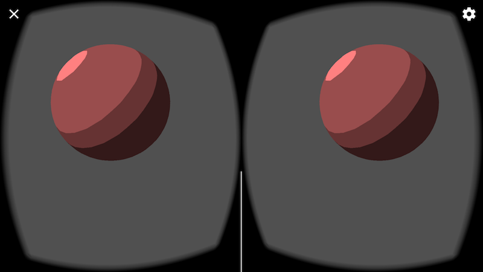

Introducción a RV
Demos los primeros pasos con Google VR para escribir aplicaciones inmersivas utilizando Processing.
Google VR
La plataforma Google VR nos permite usar nuestro teléfono inteligente como un portal a la realidad virtual. El modo Android es compatible con Google Cardboard y Daydream, y nuestos bosquejos en 3D se pueden ejecutar en el teléfono como aplicaciones Cardboard en modo de vista estéreo y que responden al movimiento de la cabeza. Un requisito para programar apps de RV es tener una base de gráficos 3D en Processing, y este tutorial puede resultar útil como una introducción a 3D en Processing.
Requerimientos
Para usar RV con Cardboard, se necesita un teléfono compatible con Android 4.1 o superior y un sensor de giroscopio para el seguimiento de los movimientos de la cabeza, y un visor Cardboard. Si no tienes un visor, puede ejecutar tu bosquejo en modo monoscópico, que se explicará a continuación. Para Daydream, necesitarás el visor Daydream View y un teléfono compatible con Daydream .
Primeros pasos
Antes que nada, tienes que seleccionar la opción RV en el menú de Android para asegurarse de que tu bosquejo se compilado como una app RV:

Un bosquejo para RV debe incluir como mínimo la importación de la biblioteca RV y el motor de renderizado VR (o STEREO):
import processing.vr.*;
void setup() {
fullScreen(VR);
}
void draw() {
}
Si corremos el código de arriba, deberíamos obtener una vista estéreo vacía en nuestro teléfono:

El motor de renderizado estéreo funciona dibujando cada cuadro dos veces, una para cada ojo. Puede saber qué ojo se está dibujando en cada llamada de la función draw() podemos usar la variable eyeType que es provista por la biblioteca RV:
import processing.vr.*;
void setup() {
fullScreen(VR);
}
void draw() {
PGraphicsVR pvr = (PGraphicsVR)g;
if (pvr.eyeType == PVR.LEFT) {
background(200, 50, 50);
} else if (pvr.eyeType == PVR.RIGHT) {
background(50, 50, 200);
} else if (pvr.eyeType == PVR.MONOCULAR) {
background(50, 200, 50);
}
}

Podemos observar que eyeType también podría ser MONOSCOPIC, lo cual sucede si estamos usando el motor de renderizado MONO en lugar de VR o STEREO. Con el motor de renderizado monoscópico, cada cuadro se dibuja solo una vez, pero la cámara la escena aún responde a los movimientos del teléfono en el espacio físico.
Una vez configurado el motor de renderizado de RV, no que hacer nada especial para agregar objetos 3D a la escena virtual. Todas las funciones de dibujado de primitivas y formas 3D del motor de renderizado P3D están disponibles en RV. Podemos agregar texturas, luces y efectos basados en sombreadores (shaders), como se demuestra en el siguiente bosquejo (código completo disponible aquí):
import processing.vr.*;
PShader toon;
boolean shaderEnabled = true;
void setup() {
fullScreen(VR);
noStroke();
fill(204);
toon = loadShader("ToonFrag.glsl", "ToonVert.glsl");
}
void draw() {
if (shaderEnabled == true) shader(toon);
translate(width/2, height/2);
background(80);
directionalLight(204, 204, 204, 1, 1, -1);
sphere(150);
}
void mousePressed() {
if (shaderEnabled) {
shaderEnabled = false;
resetShader();
} else {
shaderEnabled = true;
}
}
Es importante notar el uso de la llamada translate(width/2, height/2) que asegura de que la escena esté correctamente centrada delante de nuestros ojos. Esto es necesario porque, de manera predeterminada, Processing elige como orígen la esquina superior izquierda de la pantalla, lo cual es conveniente para dibujo en 2D, pero no tanto en realidad virtual. La resultado del este bosquejo debería verse así:

Creando una escena 3D más compleja
En este nuevo ejemplo, crearemos una escena 3D con algunos objetos más. Empecemos definiendo una cuadrícula 2D como referencia.
Debido a que el rendimiento es muy importante en RV a efecto mantener la velocidad de dibujado de cuadros lo más alta posible y así evitar mareo en el usuario, podemos hacer uso de objetos PShape para guardar geometría estática en memoria y así evitar tener que volver a generarla en cada cuadro:
import processing.vr.*;
PShape grid;
void setup() {
fullScreen(VR);
grid = createShape();
grid.beginShape(LINES);
grid.stroke(255);
for (int x = -10000; x < +10000; x += 250) {
grid.vertex(x, +1000, +10000);
grid.vertex(x, +1000, -10000);
}
for (int z = -10000; z < +10000; z += 250) {
grid.vertex(+10000, +1000, z);
grid.vertex(-10000, +1000, z);
}
grid.endShape();
}
void draw() {
background(0);
translate(width/2, height/2);
shape(grid);
}
Observa cómo la coordenadas Y de los vértices de la cuadrícula es +1000, ya que el eje Y en Processing apunta hacia abajo, por lo que los objetos debajo de nuestra línea de visión en RV deben tener coordenadas positivas.
¡Ahora podemos añadir algunos objetos! Para optimizar el rendimiento, podemos agrupar varias formas 3D dentro de un solo grupo PShape, que es más rápido que manejar cada objeto por separado, de la siguiente manera:
import processing.vr.*;
PShape grid;
PShape cubes;
void setup() {
fullScreen(VR);
grid = createShape();
grid.beginShape(LINES);
grid.stroke(255);
for (int x = -10000; x < +10000; x += 250) {
grid.vertex(x, +1000, +10000);
grid.vertex(x, +1000, -10000);
}
for (int z = -10000; z < +10000; z += 250) {
grid.vertex(+10000, +1000, z);
grid.vertex(-10000, +1000, z);
}
grid.endShape();
cubes = createShape(GROUP);
for (int i = 0; i < 100; i++) {
float x = random(-1000, +1000);
float y = random(-1000, +1000);
float z = random(-1000, +1000);
float r = random(50, 150);
PShape cube = createShape(BOX, r, r, r);
cube.setStroke(false);
cube.setFill(color(180));
cube.translate(x, y, z);
cubes.addChild(cube);
}
}
void draw() {
background(0);
lights();
translate(width/2, height/2);
shape(cubes);
shape(grid);
}
El resultado final de este bosquejo debería verse como sigue, claro que variando de acuerdo al punto de vista de la cámara en RV: